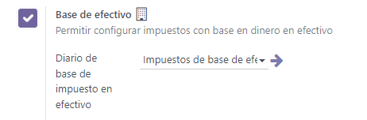
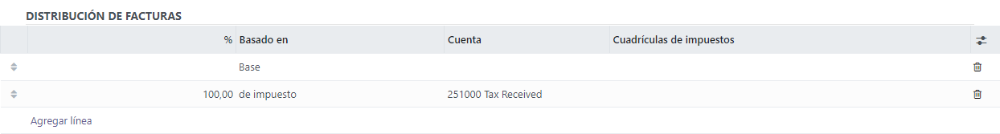
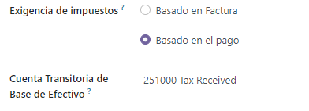
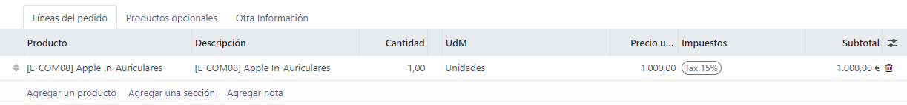

Cash basis taxes¶
Cash basis taxes are due when the payment is made, as opposed to standard taxes that are due when the invoice is confirmed. Reporting your income and expenses to the government based on the cash basis method is mandatory in some countries and under some conditions.
Example
You sell a product in the 1st quarter of your fiscal year, and the payment is received in the 2nd quarter. Based on the cash basis method, the tax you must pay is for the 2nd quarter.
Configuration¶
Go to and under the Taxes section, enable Cash Basis.
Then, define the Tax Cash Basis Journal. Click on the external link button next to the journal to update its default properties such as the Journal Name, Type or Short Code.
Note
By default, the journal entries of the Cash Basis Taxes journal are named using the CABA short code.
Once this is done, go to to configure your taxes. You can either Create a new tax or update an existing one by clicking on it.
The Account column reflects the proper transitional accounts to post taxes until the payment is registered.
In the Advanced Options tab, decide of the Tax Exigilibity. Select Based on Payment, so the tax is due when the payment of the invoice is received. You can then also define the Cash Basis Transition Account where the tax amount is recorded as long as the original invoice has not been reconciled.
Impact of cash basis taxes on accounting¶
To illustrate the impact of cash basis taxes on accounting transactions, let’s take an example with the sales of a product that costs 1,000$, with a cash basis tax of 15%.
The following entries are created in your accounting, and the tax report is currently empty.
Customer journal (INV) |
|
|---|---|
Debit |
Credit |
Receivable $1,150 |
|
Income $1,000 |
|
Temporary tax account $150 |
|
When the payment is then received, it is registered as below :
Bank journal (BANK) |
|
|---|---|
Debit |
Credit |
Bank $1,150 |
|
Receivable $1,150 |
|
Note
Once the payment is registered, you can use the Cash Basis Entries smart button on the invoice to access them directly.
Finally, upon reconciliation of the invoice with the payment, the below entry is automatically created:
Tax Cash Basis Journal (Caba) |
|
|---|---|
Debit |
Credit |
Income account $1,000 |
|
Temporary tax account $150 |
|
Income account $1,000 |
|
Tax Received $150 |
|
The journal items Income account vs. Income account are neutral, but they are needed to ensure correct tax reports in Odoo with accurate base tax amounts.
Using a default Base Tax Received Account is recommended so your balance is at zero and your income account is not polluted by unnecessary accounting movements. To do so, go to , and select a Base Tax Received Account under Cash Basis.